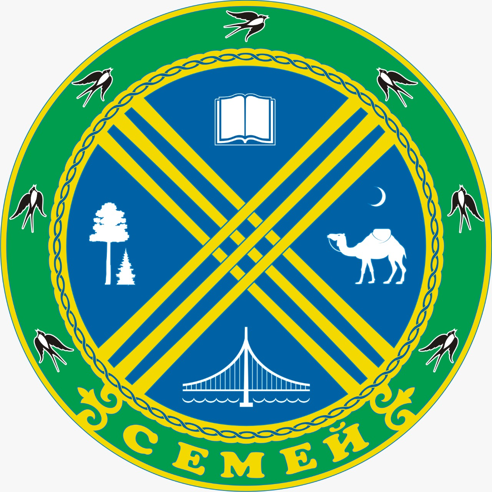

Semey
Semey (Kazakh: Семей, Semei, سەمەي; Cyrillic: Семей (listen)), until 2007 known as Semipalatinsk (Russian: Семипала́тинск) and in 1917–1920 as Alash-kala (Kazakh: Алаш-қала, Alaş-qala), is a city in eastern Kazakhstan, in the Kazakh part of Siberia. When Abai Region was created in 2022, Semey became its administrative centre. It lies along the Irtysh River near the border with Russia, 1,000 kilometers (620 mi) north of Almaty and 700 kilometers (430 mi) southeast of the Russian city of Omsk. Its population is 350 967 (2009 Census results)
Famous Residents
Historical Facts
- In 1778 the fort was relocated 18 kilometres (11 mi) upstream to less flood-prone ground.[citation needed] A small city developed around the fort, and largely served the river trade between the nomadic peoples of Central Asia and the growing Russian Empire. The construction of the Turkestan-Siberia Railway in the early 20th century added to the city's importance, making it a major point of transit between Central Asia and Siberia. On 19 May 1854, Semipalatinsk was designated as the capital of the Semipalatinsk Oblast within the Russian Empire.
- Between 1917 and 1920, the city operated as the capital of the largely unrecognized Alash Autonomy, a state (1917–1920) established after the outbreak of the October revolution in Russia. The city was called Alash-qala during the Alash Autonomy years. Red Army forces loyal to Petrograd took control of the area in 1920. It was the center of the Semipalatinsk Governorate [ru] until 17 January 1928, then of the Eastern Kazakhstan Oblast between 17 January 1928 and 14 October 1939 and finally of the Semipalatinsk Oblast between 1939 and 1997.
- In 1949 the Soviet atomic bomb programme selected a site on the steppe 180 km (110 mi) west of the city as the location for its weapons testing. For decades, Kurchatov (the secret city at the heart of the test range named for Igor Kurchatov, father of the Soviet atomic bomb) was home to many of the brightest stars of Soviet weapons science. The Soviet Union operated the Semipalatinsk Test Site (STS) from the first explosion in 1949 until 1989; 456 nuclear tests, including 340 underground and 116 atmospheric tests, took place there.
- Modern Semey, a bustling university town, has a population exceeding 350,000. Because of its proximity to the Kazakh border with the Russian Federation, and the large scientific community attached to the STS labs and the university, which includes many Russians, Semey is said to have a more Russian character than other cities in Kazakhstan.
Photos of Semey
